Highland brassicas & herbs
Broccoli, cauliflower and fresh culinary herbs — highland-grown, benefiting from Iringa's altitude and cool nights, harvested to order.
Tanzania Indoor & Professional Farmers Association
Professional farming. Dependable harvests. One association, one quality standard, one coordinated crop calendar and one point of contact — backed by every member farm in Iringa, Southern Highlands.
Founding member farms
Core high-value crops
Target premium markets
Months of coordinated supply
The opportunity
Premium buyers in East Africa face a hard choice: import from far away at high cost, or take a risk on inconsistent local supply. TIPFA offers a third path.
Individual farmers negotiate alone, limiting the volume and reliability any single buyer can secure.
Without a shared standard, produce quality varies across seasons, farms and even individual harvests.
No single point of contact through which a buyer can plan, order and build a lasting supply partnership.
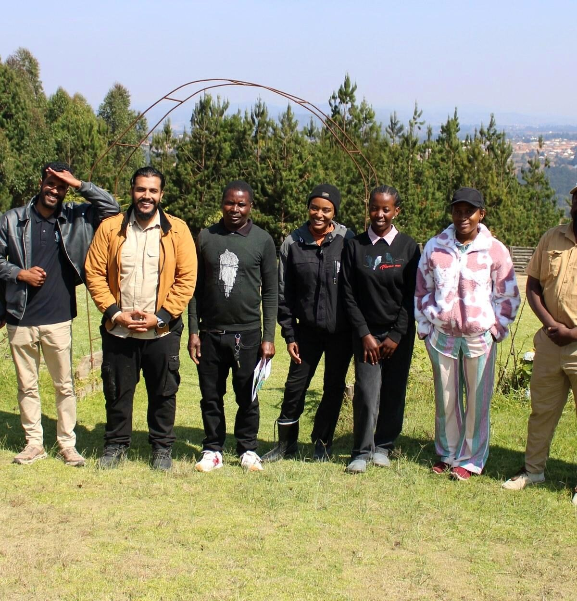
The third path
Our foundation
Not a co-operative. Not an aid project. A professional association of serious commercial farmers, structured on four pillars that make us a credible partner for premium buyers.
A registered structure with defined governance and full accountability across every member farm.
A single quality standard, working towards full alignment with GlobalG.A.P. and HACCP.
Grown from premium Rijk Zwaan seed, propagated through our own commercial nursery.
A shared crop calendar engineered to deliver premium produce every month of the year.
Our produce
Grown under protected environments, on drip irrigation, from premium Rijk Zwaan seed varieties, to a shared quality standard across every member farm.
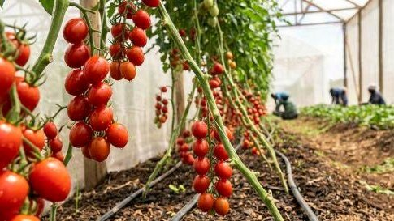
In productionGreenhouse-grown, trellised and graded to a common specification.
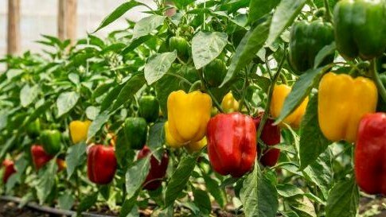
In productionRed, yellow and green. Protected cultivation on drip irrigation.
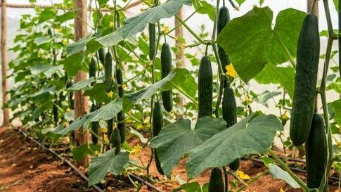
In productionProtected cropping, planned into the shared calendar for continuity of supply.
Our founding members
A deliberately small group. A committed foundation. A national network in the making — anchored in and around Iringa, setting the quality benchmark for every farm that joins us ahead.
Cherry tomato · Capsicum
Capsicum · Cherry tomato
Organic high-value crops
Broccoli · Cauliflower · Herbs
Cherry tomato · Capsicum
Our standards
Every TIPFA member farm operates to a common quality framework, aligned to international standards, allowing us to speak with one voice to premium buyers.
Working towards GlobalG.A.P. — progressive implementation of the internationally recognised Good Agricultural Practice standard.
Working towards HACCP — a dedicated committee developing our food-safety framework across all member farms.
Three-Box Crop Selection — every crop tested against indoor suitability, harvest timing and market value.
Shared crop calendar — coordinated planning across all member farms, engineered for reliable year-round supply.
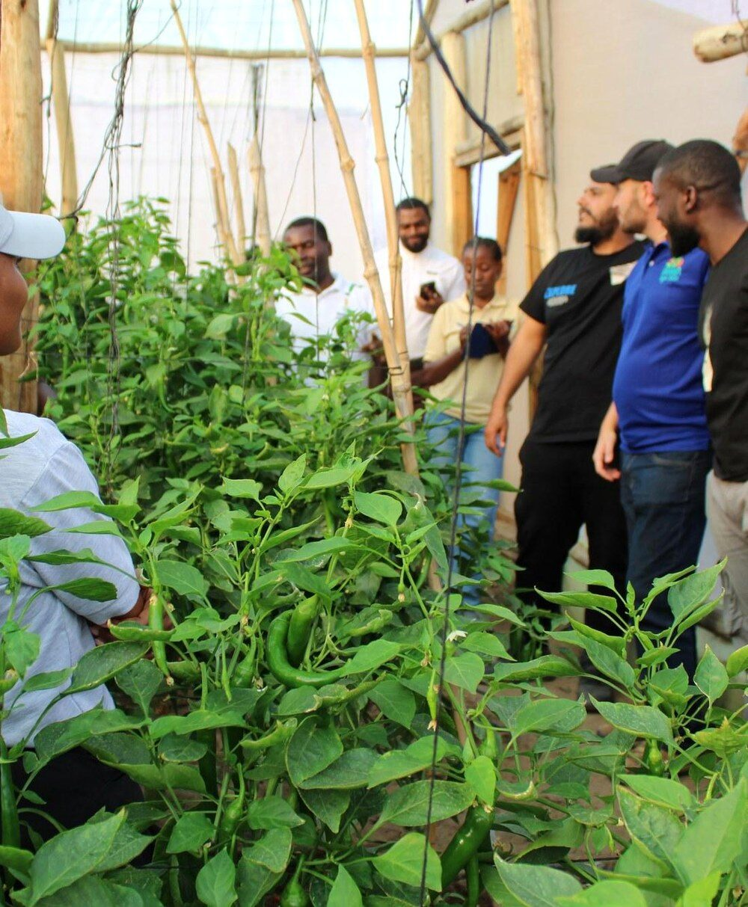
Rijk Zwaan lot recorded at source.
Nursery batch tied to the seed lot.
Farm, house and planting date logged.
Harvest, grade and dispatch recorded.
Anchor technical partner
TIPFA farms grow premium Rijk Zwaan varieties selected for yield, uniformity, shelf life and buyer preference, with ongoing agronomic support extended across every member farm. Variety selection runs through the Association's Three-Box process before adoption.
Engaged with TIPFA on protected cultivation technology, greenhouse systems and crop inputs. Joined the July 2026 delegation to member farms in Iringa.
The Association's own nursery propagates seedlings for member farms, so production begins from identical, healthy planting material.
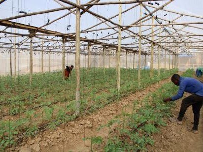
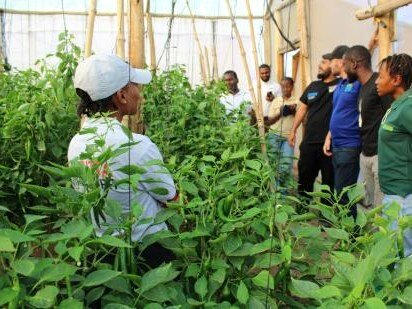
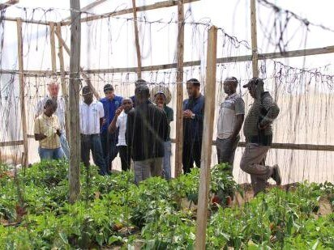
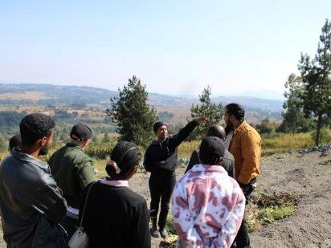
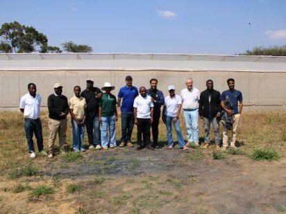
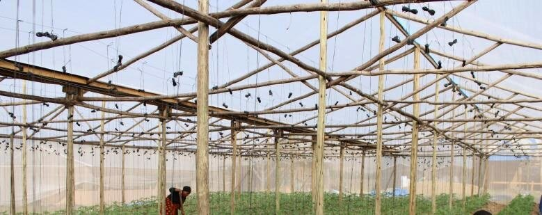
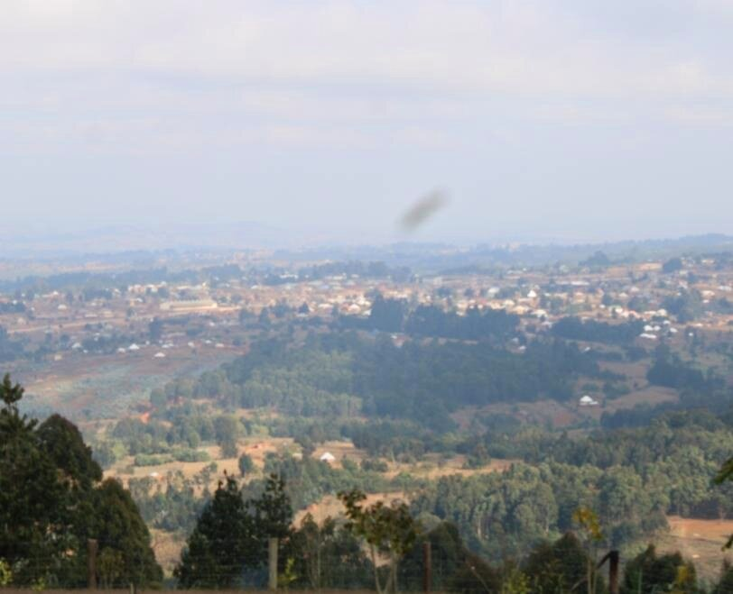
Our geography
Our farms are in Iringa, in the fertile Southern Highlands of Tanzania. From there, our produce reaches the country's leading premium demand centres.
Retail, hospitality and processing demand — first priority in the roll-out.
Institutional and government demand.
Hotels and the tourism supply chain.
Tourism, hospitality and northern retail.
Our promise
For premium buyers, TIPFA offers what independent farmers cannot: a single, structured partnership, backed by every one of our member farms.
Held to a shared standard across every member farm, verified by our common quality framework.
Planned through our coordinated crop calendar, so we can commit to volumes and hold to them.
One consolidated relationship, one coordinated delivery, one partnership you can build on.
From premium Rijk Zwaan seed, to seedling, to greenhouse, to your loading bay — every step recorded.
Joining TIPFA
TIPFA is for growers who farm as a business rather than as a season. From January 2027, the Association opens vetted membership recruitment to professional farmers across Tanzania.
Contact the secretariat by phone, WhatsApp or email.
A visit to review production, records and readiness.
Review against the Association's membership criteria.
Sign the member agreement and enter the crop calendar.
Kama unalima kwa greenhouse au shamba lililopangwa, na uko tayari kufuata standard moja ya ubora na crop calendar ya pamoja — TIPFA ni chama chako. Usajili rasmi unafunguliwa Januari 2027. Wasiliana nasi: 0744 443 247.
Looking ahead
The five founding farms are the beginning: deliberately small, deliberately focused, enough to prove the model. From there, TIPFA builds a national network.
Five founding member farms operating under a Terms of Collaboration. Shared quality framework and crop calendar established. Anchor buyer relationships opened.
TIPFA opens vetted membership recruitment to professional farmers across Tanzania, assessed against the benchmark set by the founding farms.
Expansion across the Southern Highlands and beyond. Strengthened supply into Dar es Salaam, Dodoma, Zanzibar and Arusha. Progressive implementation of GlobalG.A.P. and HACCP.
A national network of professional growers, aligned to international standards, supplying premium buyers reliably and at scale.
Buyers who partner with us early, grow with us.
Start a conversation
Contact the TIPFA secretariat and we will arrange a farm visit — so you can see the standard for yourself, not just read about it.